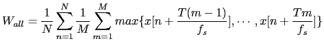

Next: ICSI Meetings Skew Estimation Up: Meeting Information Extraction Previous: Reference Channel Computation Contents
The input signal to the filter-and-sum module is typically a
16bit, 16KHz signal, and the output being treated by the
diarization system is of the same characteristics. By using 16
bits it can represent values from -32767 to +32768 in a single
channel in steps of 1 (resolution of the input). Such resolution
gets modified when performing the weighted sum of  signals as
the resolution becomes smaller than 1 (the range of possible
values of the summed signal depends of the weights of the
individual signals, it would be
signals as
the resolution becomes smaller than 1 (the range of possible
values of the summed signal depends of the weights of the
individual signals, it would be
 for equal weighing).
Although a higher resolution is available after the sum, the
signal needs to be quantized to steps of unit value to fit it into
the 16bit output channel, therefore getting a quantization error
at each frame.
for equal weighing).
Although a higher resolution is available after the sum, the
signal needs to be quantized to steps of unit value to fit it into
the 16bit output channel, therefore getting a quantization error
at each frame.
As the use of a signal output using more bits (like using floating points) creates an inconsistency with the standard signals used in the system and therefore was not considered as feasible, two simple modifications were done in order to minimize the amount of quantization error whenever possible. These are:
There are several alternatives in signal processing to find maximum values of a signal in order to normalize it. Some alternatives are to compute the absolute maximum amplitude over all the show, or the Root Mean Square (RMS) value, or other variations of it involving a histogram of the signal (for example, taking the maximum as the 80% of such histogram).
It was observed that the processed signal contains very low energy areas (silence regions) with short duration in average, and very high energy areas (impulsive noises, like door slams, or common laughs or discussions), with even shorter duration. By using the absolute maximum or RMS it would saturate the normalizing factor to the highest possible value or bias it according to the amount of silence in the show. A windowed maximum averaging was implemented instead in blocks of T=10 seconds to ensure that every block is highly probable to contain some speech. In each block the maximum value is found and averaged over all the recording. Such average is used to obtain the overall weighting factor for the signal in terms of the average maximum of each of the channels as
|  | (5.8) |
user 2008-12-08